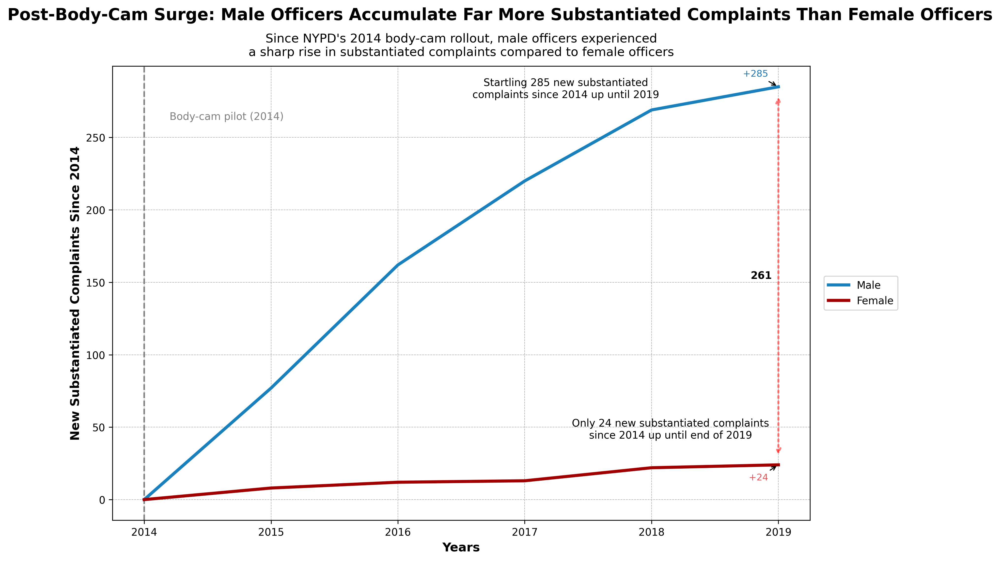
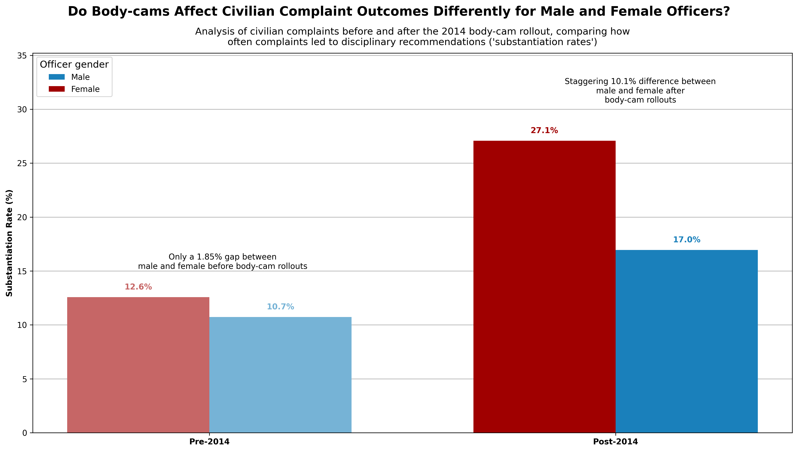

Proposition: After the NYPD’s body-camera pilot program rollout in 2014, male police officers received a higher number of substantiated civilian complaints compared to their female counterparts.
FOR the Proposition

Design Decisions and Rationale:
- 1.5, Baseline of counts starts at 2014 to emphasize the change after body-cam rollouts. It faithfully shows the trend of counts after 2014.
- 1.5, Added red vertical line at 2019 to highlight the difference at the latest year. It just shows the difference between the 2019 year.
- -0.5, Annotated the height of female and male officer counts that emphasizes its difference. It contains some language that has bias in it to sway the reader's mind.
AGAINST the Proposition

Design Decisions and Rationale:
- -1.5, Decided to use substantiation rate. This is pretty deceptive since there's a large difference between female and male officers to begin with and having less data points leads to more variation.
- 1, Reducing the opacity of the pre-2014 bars. It deceives the reader by diverting their attention to the post 2014 rates.
- -1.5, Deciding to group on pre and post 2014. There are way less female officer data than there is male, and grouping post 2014 would further limit the amount of female officer data that got transformed.
Final Reflection
Throughout designing my graphs, the most straightforward thing was creating a time-series plot where we counted the number of substantiated complaints against male and female officers. I was able to clearly show a trend that differentiates male and female gender officers, because the data already had that trend in place. However, the most most difficult part was showing an opposite trend. I had to brainstorm a lot and come up with different metrics that would persuade the reader of the opposite trend. Here, I ultimately choose to work with substantiation rate which may seem earnest at first, but behind the scenes, the reason why it showed the opposite trend for substantiaton rate was because of the lack of female officer data so the rates/proportions get more increased. What suprised me was how easy it was to create a graph that misleds the reader, so that makes me realize if half or more of the visualizations I see online had data manipulated to show a different, biased trend. This leads into how I define ethical analysis and visualization. First and foremost, I believe if we are creating a visualization, there should be enough datapoints to support what the takeaway of the visualization should be. Although "enough" might be subjective, I would say around 100 or more observations would be sufficient in most contexts. Another aspect about designs to point out are annotations and title making. I believe having neutral language is the most ethnical but the way I wrote it had strong biased language like "startling" and "staggering" that shows I am biased torwards a certain trend. I also believe being transparent with the reader is ethical if the creator is aware of their biased designs. I also believe that if the language and tone seem biased but the numbers support what the message is trying to say, then its more so persuasive than misleading. For instance I had a biased title that depicted male officers having higher substantiation complaints, however the data did support that. Drawing the line between acceptable persuaive choices and misleading ones all really dependent on how much the designer wants to convey their message. Really, I would say overall a visualizaion is ethical when they are transparent with their design decisions, even if it is blatently persuasive. However, at times when the visualization is not being transparent, instead for instance, hide their data transformations, or maybe even distort the data to convey a message, it would be unethical and misleading.